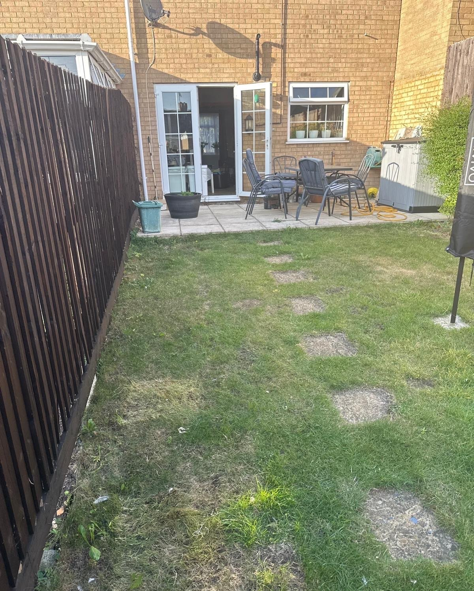
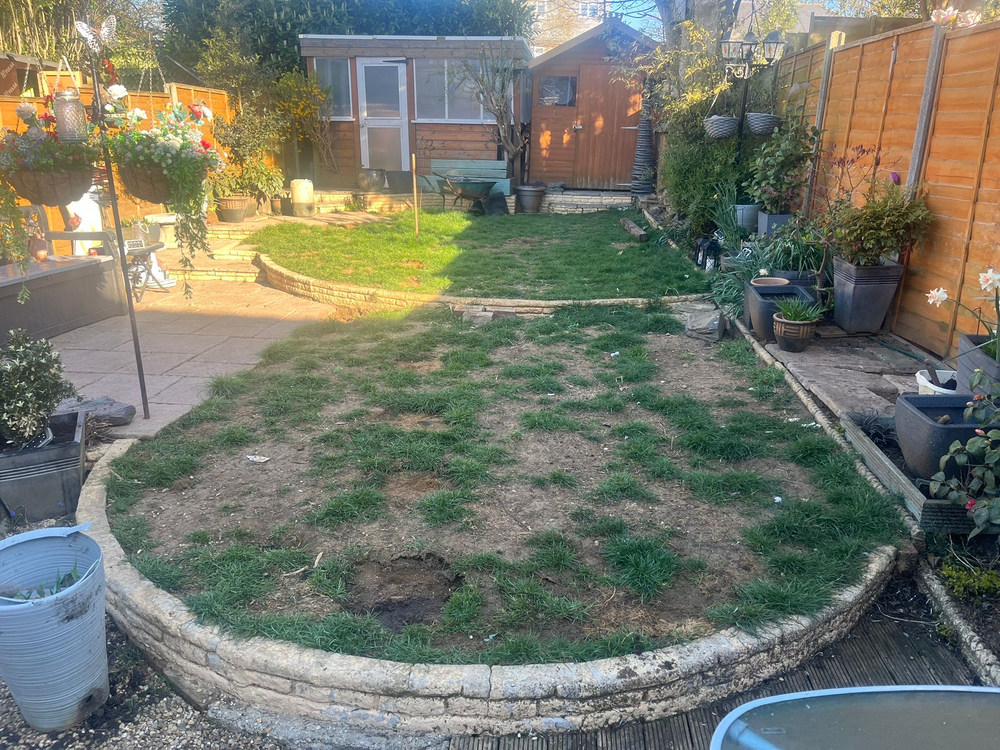
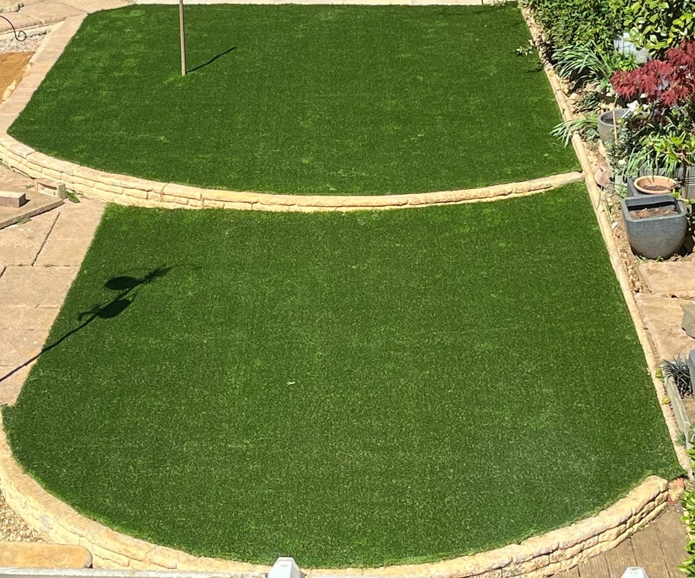
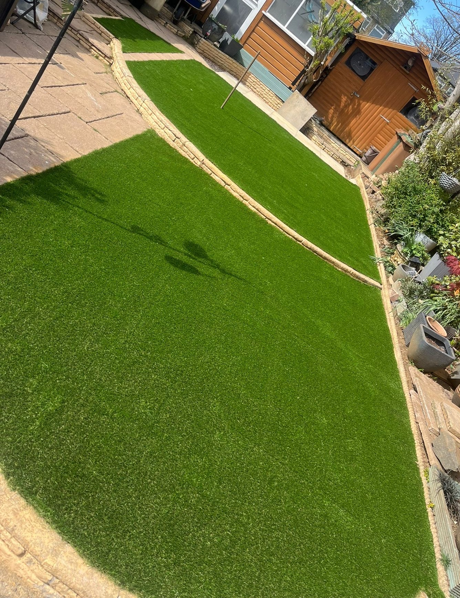
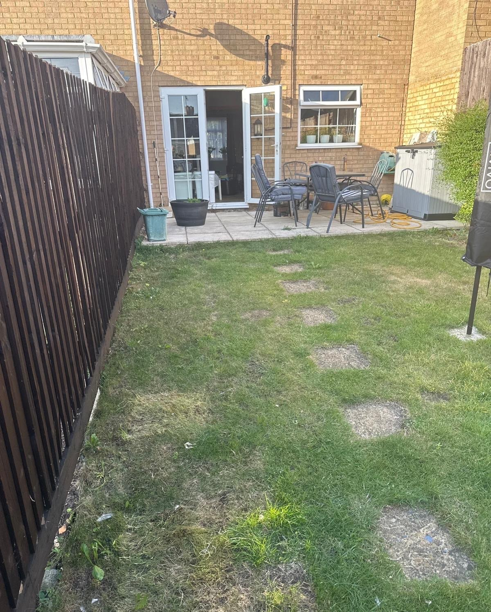
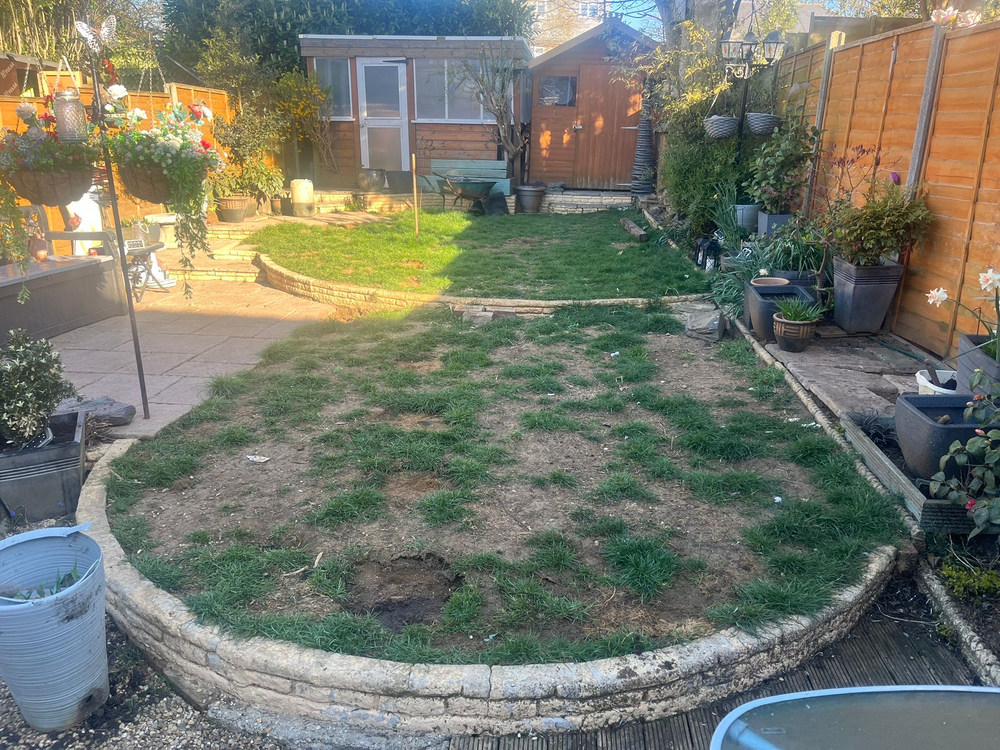
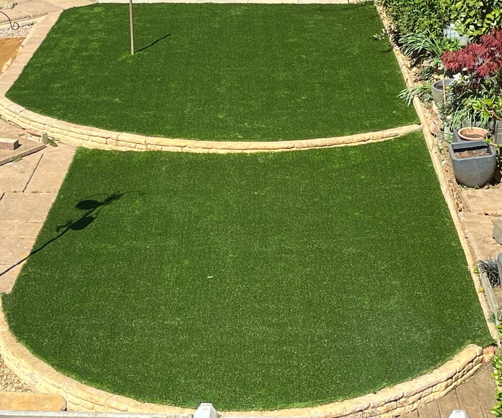
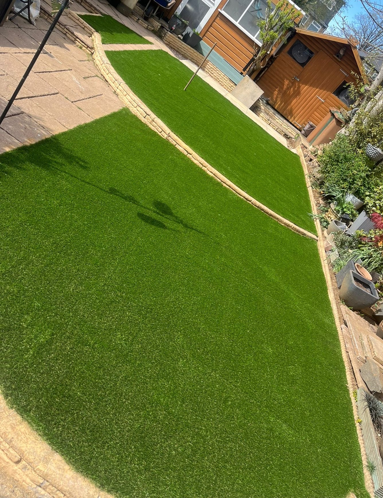
Phase 1 – Rip‑out & Prep: Removed the old patio and lawn, excavated to sound sub‑grade.
Phase 2 – Rebuild Base: Compacted Type 1 stone to perfect levels with the whacker plate.
Phase 3 – Bed & Lay: Slurry‑primed every slab and laid to a laser level finish.
Phase 1 – Strip Surface: Skimmed off turf and hard pan, gently grading without disturbing aging walls.
Phase 2 – Edge & Stone‑up: Re‑set existing block edging, stoned base and haunched with builder’s sand.
Phase 3 – Screed & Secure: Screeded sharp sand, fixed DPM, rolled and pinned astro so it stays put—even with lively dogs.
Phase 1 – Clear Site: Stripped out old beds, saving existing topsoil for reuse.
Phase 2 – Build Structure: Constructed new treated‑sleeper walls, black‑jacked interiors for rot protection.
Phase 3 – Refill & Finish: Sieved soil to remove debris, enriched and back‑filled—ready for planting.
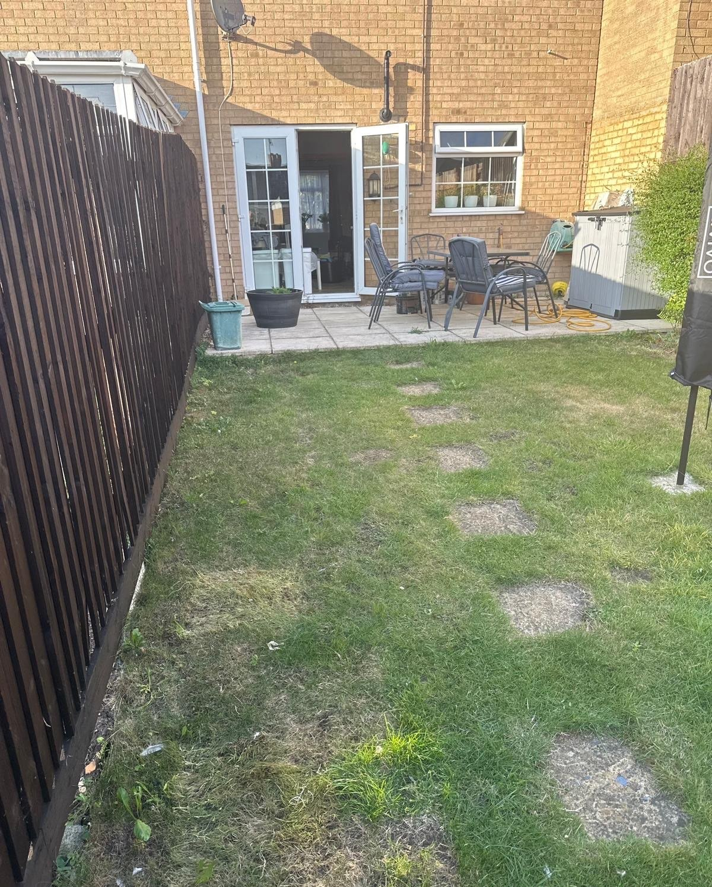
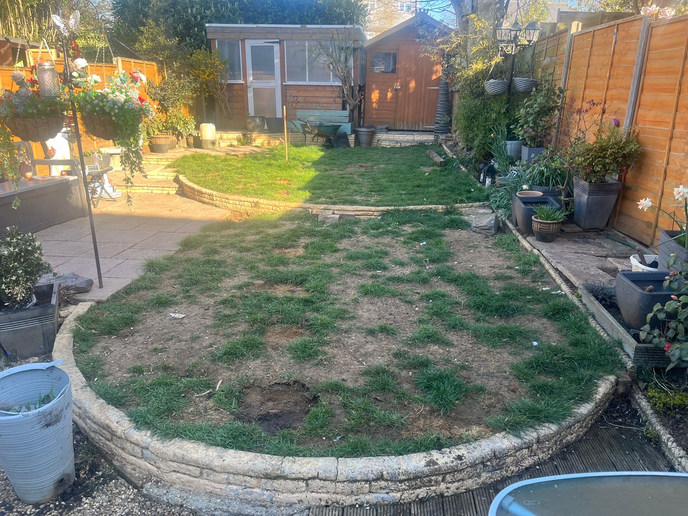
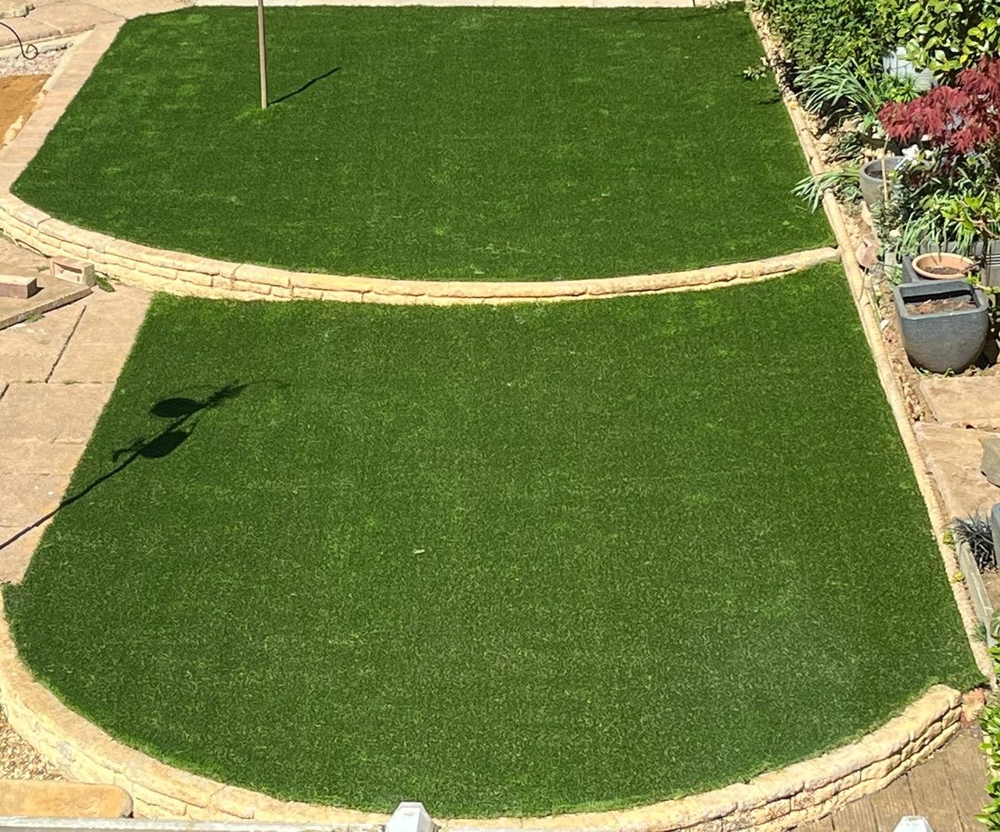
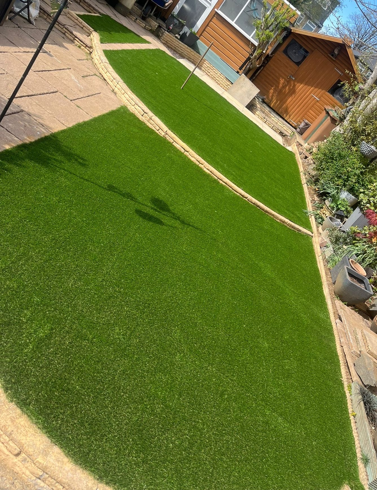
Tell us about your space and get a free, no‑obligation quote.
Contact Us